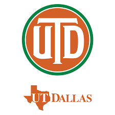

Who Am I?
I am an eternal learner, consistenly improving my skills in the digital space from Usability, Programming, and Search Engine Optimization.
Education
The University of Texas at Dallas Bachelor of Marketing(2015-2019)

Work Experience
Digital Marketing Specailist - Scorpion (Current)
- Develop on-going stratgies to increase site traffic through SEO means and GMB listings
- Reguraly adjust bid stragies on PPC campaigns to drive better conversions for clients
- Consulting clients on upgrade contracts to generate higher MMR
- Oversee 60+ accounts while maintaining a 95% rentention rate
Digital Presence Manager - Gannett (May 2021 - Mar 2023)
- Monitor and Review metrics around page performacne, bounce rates, CTRs, and site traffic trends
- Create Strategic plans to hit performance goals for SEO, SMM, and GMB listings
- Engage in cross-team collabaration for generating success around SEO and SMM campaigns
- Stay up to date on the latest practices, strategies, and technologies for digital marketing
SEO/SMM Specialist - UrgentCare2go (Feb 2020 - May 2021)
- Managed and Optimized Google Ad/PPC accounts on a weekly basis
- Routinely conducted Competitor Analysis to understand Company direct and indirect threats
- Created social media posts daily to boost user interactions within the company website and Social pages
- Brought in a 35% increase in conversions for COVID-19 Campaign while maintaining a low CPC
Tehcnical Skills
- Project Management
- SQL
- Google Analytics/Ads
- Microsoft Excel
- Wordpress
Certifications
- Google Ads Certified
- Google Analytics Certified
- PostgresSQL Certification
Contact Info
Hobbies